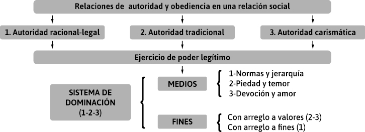
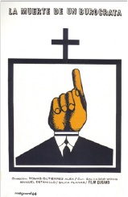
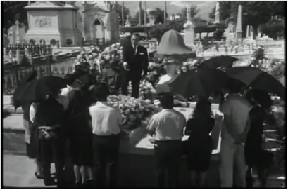

Fernando Isuani, Sergio Agoff, Cecilia Chosco Díaz y Mirtha Anzoátegui
A lo largo de este capítulo centraremos nuestra mirada en el denominado “fenómeno burocrático”, y apelaremos para ello a diversos aportes sobre la teoría de la burocracia y sus implicancias en el estudio de las organizaciones, en la conformación de los Estados y su administración pública.
Para comenzar, resulta conveniente realizar algunas observaciones en torno a la palabra burocracia. Como ocurre con otros conceptos, su carga de sentido es tan versátil, e incluso contradictoria, que dificulta cualquier intento de precisarla. Se trata de traducir adecuadamente esa carga semántica para facilitar la comprensión de la burocracia como fenómeno social.
A nadie escapa que el término burocracia se encuentra fuertemente asociado a la idea de Estado. En términos generales, cuando se habla de burocracia se hace referencia tanto al conjunto de organizaciones y agencias que conforman el aparato institucional del Estado, como a los funcionarios que, en el marco de competencias y jerarquías definidas, implementan las políticas públicas. Estos cuadros administrativos organizados sobre la base de un conjunto articulado de reglas y pautas de funcionamiento aportan continuidad, coherencia y relevancia a las políticas públicas.
A menudo se utiliza la palabra “burocracia”, ya sea como expresión peyorativa o como una etiqueta para designar cualquier organización pública o, simplemente, a cualquier organización formal a gran escala. Siguiendo a Olsen (2005), en este capítulo utilizamos el término asignándole los siguientes significados:
· Primero. Como una estructura organizacional distintiva –el buró u oficina– con ciertos rasgos específicos: formalizada, jerarquizada, especializada, con una clara división funcional del trabajo en una jurisdicción bien demarcada, basada en normas estandarizadas e impersonales.
· Segundo. La burocracia implica, también, un personal administrativo profesional dedicado exclusivamente, que tiene un empleo de por vida, con una carrera bien diseñada, sus correspondientes remuneraciones y pensiones, asignado a una determinada oficina y recompensado en función de su educación formal, el mérito y el ejercicio de un cargo.
· Tercero. Burocracia implica una extensa estructura normativa y organizacional en la que el gobierno se funda en la autoridad, esto es, en la creencia en un orden político racional-legal legítimo y en el derecho del Estado a definir y hacer cumplir el orden legal.
· Una cuarta acepción es posible a partir de concebir a la burocracia como un saber experto, y un modo de pensamiento o cosmovisión que opera en la conformación de los Estados, en la dirección que propone Elsa Pereyra (2015).
De esta manera, cuando hablamos de burocratización nos estamos refiriendo a la emergencia y crecimiento de formas burocráticas de organización, y no a las perversiones y a la extensión ilegítima del poder de los burócratas, aunque sobre esto último, algunas cuestiones pueden ser dichas y las abordaremos más adelante.
Fue Max Weber quien enfatizó la superioridad técnica y la racionalidad de los procedimientos de la burocracia. Weber fue historiador, politólogo, economista, jurista y sociólogo. Nació en Erfurt, Alemania, en 1864. Hijo de un jurista y político destacado del Partido Liberal Nacional, fue a estudiar en las Universidades de Heidelberg, Berlín y Gotinga, interesándose especialmente por el derecho, la historia y la economía. Desde 1886, Weber se asocia al círculo de economistas, funcionarios y socialistas académicos, interesados por las ideas sociales y “libres de aspiraciones de clase”. Eran reformadores sociales, para quienes la intervención del Estado en la cuestión social era primordial. Entre sus ideales políticos, de responsabilidad social y justicia (aspiración al bienestar de campesinos y obreros), también estaba presente la preocupación por el avance del industrialismo moderno (Duek, 2009).
Weber estudió de cerca el fenómeno de la burocracia, tema que sería relevante en su obra. Señaló que “en Occidente, con el triunfo del racionalismo jurídico formalista el tipo de dominación legal apareció junto a los tipos de dominación transmitida. El gobierno burocrático no fue, y no es, la única variedad de autoridad legal, pero constituye su forma más pura” (Weber, 1985: 49).
En este pasaje, Weber considera a la burocracia como un sistema en el que se ejerce el poder y la dominación. Descubre que en la sociedad y el Estado de Occidente, existe un tipo de autoridad y dominación, diferente al de Oriente. Esta constatación, surge a partir de los estudios que Weber realizó sobre la república de Weimar, en Alemania; Egipto, durante la existencia del Imperio Nuevo; el Imperio romano tardío, durante la época en que gobernó Diocleciano, y el Imperio Bizantino. Asimismo, sobre la Iglesia romana, a fines del siglo xviii; la China, de los tiempos de Shi-Hoang; el Estado moderno en Europa, las corporaciones públicas de la época absolutista y la gran empresa capitalista moderna (anclada en las bases del protestantismo).
|
Es relevante tener en cuenta para el análisis del pensamiento y de las obras de Weber, que sus ideales morales estuvieron anclados en el protestantismo y el capitalismo. De hecho, la identidad del capitalismo se encuentra en la ética protestante, a la que considera una causa necesaria y motora para entender el capitalismo en la época moderna, inicialmente en Europa. Y especialmente en las ideas de origen calvinista, que promovieron la visión del hombre del capitalismo moderno, orientado a los negocios, moderado, racionalista, dedicado al trabajo, visionario, precavido y consagrado a Dios y a los principios del ascetismo. En aquellas primeras manifestaciones del trabajo racionalizado y mecanizado, y de la burocracia, se encontraban empresarios, políticos y funcionarios, entre otros, aferrados al ideal de progreso, buscaban conjugar en el trabajo eficiencia y autosuperación –enunciadas por el inglés Samuel Smiles en su doctrina de la esperanza–, y así alcanzar la racionalización de la vida, el espíritu y la moral. Existía el afán por la productividad, la razón, la ciencia y la técnica. Estos pilares fueron ejes en la Revolución Industrial, marcaban un nuevo pensamiento e impactos universales. Teniendo en cuenta estos antecedentes en la religión, Weber comprende que la modernidad y el germen del capitalismo están presentes en los esquemas de gobierno, en los partidos políticos, en las relaciones sociales y económicas. De algún modo, nutren sus teorías, como es el caso de la de los tipos de dominación. |
El término dominación resulta clave para comprender el fenómeno burocrático. Al respecto, Weber define:
[Dominación] es la probabilidad de encontrar obediencia dentro de un grupo determinado para mandatos específicos (o para toda clase de mandatos) […]. Esta dominación (“autoridad”), en el sentido indicado, puede descansar en los más diversos motivos de sumisión: desde la habituación inconsciente hasta lo que son consideraciones puramente racionales con arreglo a fines. Un determinado mínimo de voluntad de obediencia, o sea de interés (externo o interno) en obedecer, es esencial en toda relación auténtica de autoridad. […] toda dominación sobre una pluralidad de hombres requiere de un modo normal (no absolutamente siempre) un cuadro administrativo; es decir, la probabilidad, en la que se puede confiar, de que se dará una actividad, dirigida a la ejecución de sus ordenaciones generales y mandatos concretos, por parte de un grupo de hombres cuya obediencia se espera. Este cuadro administrativo puede estar ligado a la obediencia de su señor (o señores) por la costumbre, de un modo puramente afectivo, por intereses materiales o por motivos ideales (con arreglo a valores). La naturaleza de estos motivos determina en gran medida el tipo de dominación (Weber, 1996: 170).
Siguiendo lo desarrollado por Weber (1998), existen tres tipos puros de dominación legítima. ¿Qué son los tipos puros o ideales? En sus estudios historiográficos y sociales, Weber desarrolló esta noción como una herramienta metodológica que permite analizar los fenómenos de la realidad. La noción de “ideal” no se refiere a una valoración positiva, deseable, sino a “abstracto”, “puro”, a una construcción conceptual. Se obtiene:
[Mediante] el realce unilateral de uno o de varios puntos de vista y la reunión de una multitud de fenómenos singulares, difusos y discretos, que se presentan en mayor medida en unas partes que en otras o que aparecen de manera esporádica, fenómenos que encajan en aquellos puntos de vista, escogidos unilateralmente, en un cuadro conceptual en sí unitario. Este, en su pureza conceptual, es inhallable empíricamente en la realidad (1982: 79-80).
Por lo dicho, realidad y tipo ideal no son lo mismo: el tipo ideal no es un reflejo de la realidad, sino la herramienta conceptual que permite medir y comparar los fenómenos empíricos, concretos, a fin de identificar sus elementos relevantes, significativos. Así, Weber desarrolló tipos ideales de acción social, de dominación, de burocracia, entre otros.
Los tipos ideales de dominación se pueden diferenciar por el fundamento primario de su legitimidad:
1) De carácter racional: descansa en la creencia en la legalidad de ordenaciones estatuidas y de los derechos de mando de los llamados, por esas ordenaciones, a ejercer la autoridad (autoridad legal). En este caso se obedecen las ordenaciones impersonales y objetivas legalmente estatuidas y a las personas por ellas designadas.
2) De carácter tradicional: una dominación es tradicional cuando su legitimidad descansa en la santidad de ordenaciones y poderes de mando heredados de tiempos lejanos, “desde tiempo inmemorial”, creyéndose en ella en méritos de esa santidad. El señor o los señores están determinados en virtud de reglas tradicionalmente recibidas. La “asociación de dominación”, en el caso más sencillo, es primariamente una “asociación de piedad” determinada por una comunidad de educación. El soberano no es un “superior”, sino un señor personal, su cuadro administrativo no está constituido por “funcionarios” sino por “servidores”, los dominados son “súbditos”. Las relaciones del cuadro administrativo para con el soberano no se determinan por el deber objetivo del cargo, sino por la fidelidad personal del servidor.
3) De carácter carismático. Carisma es la cualidad de una personalidad que la hace pasar por extraordinaria porque se la considera en posesión de fuerzas sobrenaturales o sobrehumanas –o por lo menos específicamente extracotidianas y no asequibles a cualquier otro–, o como enviado del Dios, o como ejemplar y, en consecuencia, como jefe, caudillo, guía o líder. No es relevante el modo como habría de valorarse “objetivamente” la cualidad en cuestión, lo que importa es como es valorada por los dominados o “adeptos”.
A fin de facilitar el estudio y análisis de estos tipos de dominación, a continuación presentamos una manera sencilla de pensar a Weber. El gráfico 1 facilita la observación de las conexiones entre autoridad y obediencia en una relación social, que puede ser traducida de tres formas según el tipo de sociedad o acción social. Entonces, se identifican como 1 el tipo más puro, “racional-legal”, el 2, la autoridad tradicional, y el 3, la autoridad carismática. De ellas se desprenden, en su ejercicio de poder legítimo, medios y fines (1-2-3) que consolidan cada uno un sistema de dominación legítimo, que vuelve a fortalecerse en cada día, semana, mes y año con las relaciones de autoridad. Les proponemos como consigna para cerrar este tema, pensar una organización siguiendo estos conceptos, elementos, y circuitos.

Fuente: elaboración propia.
En relación con la dominación racional-legal, Weber destaca que se ejerce por medio de un cuadro administrativo burocrático. Este hace posible la maximización de los niveles de productividad alcanzables mediante el trabajo organizado, dentro de una sociedad organizada y de acuerdo a principios racionales.
Esos cuadros administrativos se componen de funcionarios individuales que:
· se deben solo a los deberes objetivos de sus cargos,
· observan una jerarquía administrativa rigurosa,
· poseen competencias rigurosamente fijadas,
· actúan en virtud de un contrato,
· están seleccionados según su calificación profesional,
· son retribuidos en dinero con sueldos fijos y con derecho a pensión,
· ejercen su cargo como su única o principal profesión,
· tienen ante sí una carrera o perspectiva de ascensos,
· trabajan por completa separación de los medios administrativos y sin apropiación del cargo,
· están sometidos a una rigurosa disciplina y vigilancia administrativa.
Para finalizar, podemos agregar, siguiendo al autor, que la burocracia es una forma de administración específicamente moderna y que la administración burocrática es la forma más racional de ejercer la dominación, en términos de precisión, continuidad, disciplina, rigor, confianza y predictibilidad.
En esta sección pretendemos revisar algunos conceptos de la teoría burocrática a partir de la lectura de La burocracia en la sociedad moderna, propuesta por Peter Blau (1962). Este autor, que nace en Austria en 1919 y muere en 2002, forma parte de un grupo de escritores que, durante el período de posguerras, llegan a Estados Unidos e integran el estudio de la burocracia weberiana al pragmatismo de los autores de ese país.
Blau propone estudiar la burocracia desde un enfoque sociológico, con el fin de alcanzar cierta comprensión de la estructura social y del funcionamiento de la sociedad. Además, tengamos presente que el análisis de Blau es posterior a los estudios de Elton Mayo sobre Hawthorne Western Electric, los que resultaron fundamentales para revisar teorías acerca de la burocracia, básicamente por el desarrollo del análisis de los aspectos informales y espontáneos de este tipo organizacional.
¿Por qué será que cuando pedimos que nos definan a la burocracia, la respuesta siempre genera risas? Las que, en general, suenan a sorna. ¿Será que relacionan la imagen de la burocracia con aquella que se acerca a la estupidez que le endilga Blau? Un ejercicio que podemos hacer para empezar a entender este concepto es suponer que no conocemos ni leímos a Weber. Entonces, podemos preguntarnos: ¿cuál es la imagen que representa a la burocracia?
Seguramente, la mayoría de los lectores asocia la burocracia con la lentitud y los malos tratos de un organismo público. Este sesgo genera un nuevo interrogante: ¿la burocracia es solamente sinónimo del tipo de organización estatal? Blau, comienza su texto notando algunas de estas representaciones. La estupidez a la que se refiere se vincula con aquello que se conoce como ineficiencia y expedienteo. A esta situación la ejemplifica con un momento que hemos atravesado todos aquellos que tuvimos que asistir a una oficina pública. Esto es, con llenar largos formularios, con muchos ítems, engorrosos y que, finalmente, cuando los entregamos, no son admitidos por algún error insignificante y es volver a empezar todo el formulario nuevamente. ¿A eso se lo llama burocracia?
Blau la define como el tipo de organización apto para la realización de tareas administrativas en gran escala, mediante el trabajo sistemático y organizado de muchos individuos. En su concepción más negativa, el modelo burocrático se asocia con cierta rigidez, un marcado autoritarismo, excesivas estandarizaciones, trabajo rutinario, impersonalidad y también con la intercambiabilidad y la enormidad o el gigantismo de algunas organizaciones. Pero, ¿qué pasaría si no existiese la burocracia? ¿Es concebible en el mundo moderno que las actividades sean llevadas a cabo por el capricho de sus responsables? ¿Puede pensarse seriamente en una empresa, un partido político o una Iglesia en las que no existieran jerarquías? ¿Tendría sentido que no hubiera pautas establecidas para fabricar tornillos, liquidar impuestos o inscribir a nuevos postulantes para un empleo? ¿Alguien confiaría en la entidad en la que sus cuentas fueran llevadas por una empleada o empleado bancario sin documentos ni archivos que la respalden? ¿Qué pasaría si tuviésemos que ir al domicilio particular de un empleado o empleada para pedir una licencia de obra o que nuestros pagos se depositaran en sus cuentas particulares?
Esos y otros ejemplos que son mencionados por Beltrán (1988) en La legitimidad en las organizaciones, dan cuenta de la manera en que la burocracia ha atravesado la vida diaria de las personas en las organizaciones. Por otra parte, y tratando de desmitificar la idea de que la burocracia es exclusiva de las organizaciones del Estado, aunque Weber se haya referido básicamente a la burocracia pública, el Estado no es el único “portador” de burocracia. Durante los años dorados del capitalismo en el mundo occidental (1945-1973), la preeminencia de la burocracia como modelo de organización social fue fundamental para sostener a la sociedad industrial, basada en la producción masiva de bienes y servicios, la que se sostenía mediante procesos de trabajo rutinarios y estandarizados.
Para comprender algo más de la burocracia en la sociedad moderna, podemos remitirnos a los cambios sociales que fueron producto de lo que Weber llamó “desencantamiento del mundo”, concepto vinculado a la desmitificación y a la secularización de ese mundo. Básicamente, el planteo del autor se refiere a que los “misterios de antaño” fueron suplidos por los nuevos conocimientos, resultado de los progresos de la investigación científica. Leamos el texto de Blau, que señala:
Preocupados por la búsqueda de los medios más eficaces para el logro de un fin, olvidamos por qué queremos conquistarlo. Desde el momento en que no nos preocupamos por clarificar los valores básicos que determinan la preferencia de ciertos fines sobre otros, estos pierden su significación, y su obtención se convierte en un fin en sí mismo (1962: 13).
Según esta afirmación, los cambios de la sociedad capitalista se basaron en una racionalidad con arreglo a fines, como diría Weber. No obstante, agrega Blau, que los avances en el mundo productivo no hubiesen sido posibles sin la racionalización de la administración, como un prerrequisito para el aprovechamiento del conocimiento tecnológico, lo que permitió la expansión de la producción en masa. De hecho, la cadena de montaje no hubiese sido lo mismo sin los principios administrativos que, en su momento, contribuyeron a los incrementos en la producción y a la consecuente modificación de la calidad de vida de los trabajadores. Algunos de los principios que menciona son la especialización, la autoridad jerárquica, el sistema de reglas y la impersonalidad.
Así, la búsqueda de medios más adecuados para conseguir los objetivos organizacionales se corresponde con el estudio de las organizaciones burocráticas que se basan en el tipo de dominación racional-legal, como mencionamos en el punto anterior. Si tenemos en cuenta lo que dice Morgan (1998) en el capítulo “La mecanización toma el mando: la organización como máquina”, la burocracia se inscribe bajo la metáfora mecánica, en la que la estructura y los procedimientos administrativos son parte de una planificación que pretende alcanzar los objetivos organizacionales mediante prácticas eficientes, rutinarias, exactas y predecibles.
Si bien Blau presenta algunos aspectos de la teoría weberiana, su principal aporte a la teoría burocrática se funda en la irracionalidad. Para el autor no todo es racionalidad en la organización burocrática, una organización no siempre es formal, rígida, atada a las normas, en muchas ocasiones se generan nuevas estructuras, cambian las relaciones, los roles, las condiciones, los procedimientos; también pueden producirse resistencias. Al respecto, señala: “Para evitar las falsas suposiciones de estabilidad y para explicar el cambio social, resulta particularmente importante el estudio de las disfunciones, aquellas consecuencias que interfieren en el ajuste y crean problemas estructurales” (1962: 31, destacado en el original).
Esto introduce el concepto de disfunción desarrollado por Merton y que será explicado en profundidad en el apartado siguiente. El estudio de estas disfunciones, desvíos o irracionalidades lleva a Blau a confrontar las características del tipo ideal weberiano con algunas apreciaciones que propone. Tal como presentamos en el cuadro 1.
|
Características de la burocracia de Weber |
Relectura de Blau: incoherencias y tendencias conflictuales |
|
“Las actividades regulares requeridas para los propósitos de la organización se hallan distribuidas de un modo estable bajo la forma de deberes oficiales” (26-27). El mayor grado de especialización se logra con una adecuada división del trabajo de cargos y de las actividades. |
La especialización atenta contra la racionalidad. |
|
“La organización de los cargos sigue el principio jerárquico, es decir, cada cargo y se halla bajo el control y supervisión de un superior” (27). La autoridad se reduce a la actividad que desempeña. |
La necesidad de estima del superior encubre defectos en el trabajo y obstruye el flujo de información. |
|
Las tareas, deberes, funciones y derechos están regidas “por un coherente sistema de reglas abstractas… (y) consiste en la aplicación de reglas a los casos particulares” (27-28) de modo que describen y estandarizan su compartimiento dentro de la organización. |
Un sistema de reglas uniformes no constituye un sistema de incentivos para mejorar la eficacia. |
|
El funcionario ideal cumple su tarea con un espíritu de formalidad impersonal, sine ira et studios, sin enemistades ni pasión, y por ello sin afecto ni entusiasmo” (28), lo que otorga mayor imparcialidad. |
Resulta difícil el surgimiento del espíritu de cuerpo en relaciones informales. |
|
“El empleo es una carrera. Hay un sistema de promociones de acuerdo a la antigüedad o a la capacidad, o ambas” (28-29). |
La promoción por mérito no permite la identificación con la organización. Por antigüedad no significa un incentivo en el sistema de carrera. |
|
“Desde un punto de vista estrictamente técnico, la experiencia demostraría en forma universal, que la organización administrativa de tipo burocrático puro es capaz de proporcionar el más alto grado de eficacia” (29-32). Es como una máquina. |
La conformidad o rutinización inhibe la racionalidad que tiende a la eficiencia |
Fuente: elaboración propia a partir del texto de Blau (1962: 26-32).
En el cuadro 1, los ejemplos que señala Blau dan cuenta de que los mismos factores pueden aumentar o dificultar la eficiencia de una organización, es decir, genera contradicciones que son propias del modelo de tipo ideal. La lectura de Barnard (1948) que en The Functions of the executive, de la Universidad de Cambridge, hace su investigación de tipo empírico sobre las relaciones y prácticas informales, le sirve para fundamentar que la organización informal es parte de la burocracia. Si para Weber estas desviaciones producen ineficiencia, Blau sostiene que las relaciones y prácticas informales pueden contribuir a la eficiencia de una organización. La burocracia, cuando se encuentra en acción, muestra sus distintas facetas. Por un lado, la faceta formal propia de la burocracia weberiana, que se corresponde con un tipo ideal puro construido a partir de las características de distintas organizaciones, pero que es simplemente una construcción teórica, desprovista de una finalidad histórica. Mientras que, por el otro, la cara que destaca su aspecto informal, irracional.
Las reflexiones de Blau son de la década del sesenta del siglo pasado. Es necesario actualizarlas. En este sentido, Elsa Pereyra (2015) nos provee una amplia mirada sobre la teoría weberiana, al tiempo que nos posibilita poner en diálogo ideas fundamentales sobre la burocracia. A fin de explorar las tensiones conceptuales y/o debates acerca de la burocracia, como así también indagar acerca de la conformación de los saberes administrativos en la Argentina y la enseñanza de la administración del Estado, prestemos atención a la autora mencionada:
La reflexión teórica sobre burocracia quedó detenida en el tiempo, hay poco, es evidencia empírica, entonces ahí nos metemos en ¿cómo se investiga la burocracia? ¿cómo se estudia? ¿qué huellas tenemos del hacer? tenemos los expedientes y estos tienen marcas, y si uno tiene una buena teoría en la cabeza los hace hablar, con una buena pregunta se puede, porque el papel es el papel…el expediente no está hecho para que se estudie, sino sirve para dar curso a una actuación. Ese es un trabajo muy artesanal que tenemos los investigaciones sobre las primeras líneas, segundas líneas y sobre todo en perspectiva histórica, ahora no llegamos más allá de los que son cabeza de cada área de la gestión, y la masa gris, poco glamorosa, queda en esa bolsa general que requiere contrastación empírica, y los supuestos de sentido común de la burocracia descansan en aspectos de la evidencia de cada uno que ha permitido forjar ese sentido de los burócratas y hay muchas administrativas del personaje de Antonio Gasalla,7 pero hay otros que no cumplen ni por asomo con esos rasgos, al carecer de trabajos de campo que requieren de equipos que se sumergen en el día a día de las oficinas seguimos consumiendo eso del sentido común que nos siguen hablando de los desvíos, ¿no? De las disfunciones que abreva en esa caracterización que sería bueno abandonar, lo cierto es que no tenemos equipos que avancen… ahí habrá que indicar nuevamente la experiencia para retornar y para matizar ese estereotipo de la burocracia y las burocracias… (Pereyra, 2015, destacado nuestro).
Teniendo en cuenta las palabras de Pereyra, podemos concluir que, en primer lugar, el estudio de la burocracia se ha detenido en el tiempo, dado que resulta complejo en su abordaje debido a la necesidad de hacer una reconstrucción artesanal que muestre lo que ocurre en el interior de las oficinas públicas. Es decir, se necesita ahondar en miradas empíricas que muestren las dos caras de la burocracia, una orientada por reglas y relaciones impersonales, y la otra, por las relaciones sociales en la cotidianidad de la oficina. En segundo lugar, pareciera que ha ganado terreno en la sociedad la visión estereotipada del burócrata, caricaturizado en el personaje de la empleada pública, que se distancia del tipo ideal que presenta Weber. En tercer lugar, resulta necesario pensar la burocracia en el marco de sus contradicciones y no disociar racionalidades e irracionalidades. Por último, mostrar la complejidad de la burocracia permite establecer una relación con el texto de Plotkin y Zimmermann, quienes proponen mirar al Estado desde perspectivas novedosas, al decir:
Ya no se trata de mirar al Estado siguiendo la tradición weberiana como una agencia que monopoliza la coerción legítima, sino más bien como un organismo dinámico, polifacético y en constante evolución, evolución que estaría lejos de ser lineal y sincrónica en todas sus áreas…un Estado fragmentado según lógicas múltiples (a veces contradictorias entre sí)… (2012: 23).
Juan Pablo Gonnet (2012), investigador de la Universidad de La Plata, hace una revisión crítica de la forma en que se interpretaron los planteos weberianos desde la sociología de las organizaciones. Sostiene que es claro que los autores de la sociología de las organizaciones no explicitaron su preocupación por la cuestión del poder, aunque esta cuestión sí fue retomada en el campo del estudio crítico.
A continuación, Pereyra nos va a ayudar a entender algunas de las discusiones que motivaron a los autores de la teoría weberiana-burocrática, por ejemplo, ¿cómo se expresa la relación entre el burócrata y el político en el marco del Estado? Estas ideas, que son revisadas a la luz de visiones más críticas, nos permiten preguntamos si es tan clara la diferencia entre ambos. Particularmente, Pereyra hace hincapié en los saberes expertos que caracterizan a la burocracia estatal de la Argentina, que nos dan el puntapié necesario para empezar a pensar en el poder en la burocracia. Así, para ella:
El saber político tiene como principio organizador, la negociación, la transacción, la valoración, la subjetividad. Esto que yo defino de manera vulgar como “meter los pies en el barro” y [ahí] entran a jugar los saberes. El saber tiene la pretensión de la objetividad. [Son] posicionamientos por encima de los intereses sociales, de un desprecio por el político. [Mientras que] el saber burocrático es el que se organiza sobre la base de los antecedentes, la tradición, el reglamento, es el que sabe cómo mover los papeles… En relación con esto,…es que cada vez está más mixturado, es difícil encontrar actores que porten única y exclusivamente un saber. Uno puede pensar que el saber dominante del político es la política pero también demanda del saber burocrático, el saber técnico y otro tanto podríamos decir de los otros actores. No hay actores puros, no hay actores que puedan encolumnarse de una manera definitoria. Aunque ciertamente, nos movemos por representaciones. Cuando hablamos del político no vamos a pensar en un burócrata, aunque el burócrata haga política. Es decir, tenemos representaciones del político, del técnico y del burócrata, y esas representaciones juegan mucho porque todos vivimos clasificando a los otros porque esto nos ayuda –también– a organizar nuestro lugar en el mundo… (Pereyra, 2015, destacados nuestros).
De lo anterior podemos decir que, en el seno del Estado, se generan situaciones conflictivas entre técnicos y políticos. Las razones son muchas, desde cuestiones como la pelea por los recursos, los modos de llevar adelante programas, por mencionar algunas. En lo concreto, en varias organizaciones del Estado argentino, los roles no están tan definidos, hay zonas grises en las que un burócrata es político y un político puede ser un burócrata, es decir, los roles se entremezclan.
En esta línea, los enfoques críticos nos muestran un intersticio para analizar la cuestión del poder dentro del fenómeno burocrático. Para Pereyra el conocimiento o el saber administrativo es el que detenta el poder en la oficina burocrática. Es una “llave”, dice, como lo estudiábamos con las teorías clásicas, el pensar se apropia del hacer:
Los saberes vienen siendo una llave, [los estudiosos] indagan sobre qué y cómo se construye ese saber, porque es relevante para saber cómo se construye poder e influencia en la administración pública. Sirve para el control de las oficinas, es poder, es la posibilidad de organizar y controlar el trabajo de terceros. Eso define el tipo de poder burocrático. Imaginen en una empresa, el empresario o gerente tienen poder económico y organizacional, los obreros, conservan el saber hacer, la historia del capital es tratar de sacarles a los obreros ese saber…del hacer y la maquinización, la robotización es eso. Por eso [como en] el taylorismo y el fordismo son vueltas de tuerca sobre ese traslado del saber del obrero al capital; en el mundo de los papeles, de la burocracia, la frase típica es “saber es poder”, la información es poder, el expediente es poder, un asunto, digamos, el recorrido, las normas tratan de contemplar un universal, son más rigurosas que las prácticas concretas. Entonces, lo que para este sentido común vienen siendo los atajos, es puro saber del burócrata por recorrer. Por ejemplo, los colectiveros trabajan a reglamento porque contemplan todas las situaciones que se deben cumplir, hacen más lento todo. Los choferes toman atajos que han sido convalidados socialmente. En el mundo del desarrollo de los asuntos públicos donde cada paso tiene que ser fundado, y la burocracia es esto, fundar en la razón del antecedente. Otro ejercicio interesante es mirar una ley, un decreto, revisar dónde está el argumento y lo ejecutivo, y siempre lo ejecutivo descansa en razones. Por eso se puede discutir, las razones no nacen de un repollo, son hipótesis causales sobre un asunto y en función de ello se actúa, este es el terreno de la burocracia. Por eso es mejor hablar de burocracias y dentro de las burocracias, están los burócratas rasos o el agente de policía que está en la calle, como ahora en la ciudad de Buenos Aires te piden documento, tiene poder en su relación con el ciudadano, o el jefe de policía ¿quién es más burócrata que el otro? Hay ahí una cadena de mando y jerarquías, lo cierto es que hay niveles de toma de decisiones y responsabilidad. Prefiero hablar de burócratas como aquellos que gozan de la capacidad de organizar el trabajo de terceros (Pereyra, 2015, destacados nuestros).
En la burocracia “cada paso tiene que ser fundado”, dice Pereyra. Esto nos vuelve a los tipos de dominación de Weber, tema tratado en el apartado anterior.
El modelo burocrático se sustenta en criterios racionales y en una autoridad legal que opera enmarcada en una jerarquía, desde la que impone ese “saber hacer” de acuerdo a las reglas y rutinas que han sido establecidas de antemano. Pero ¿por quién? Básicamente, por los poseedores de esos saberes. En este ámbito, la aceptación de las reglas iguala a aquellos que las acatan y funciona como mecanismo de control y coordinador de las tareas y actividades consideradas deberes, podemos decir, “indiscutibles”, simplemente porque se basan en las normas, más allá de quién ocupe esos cargos, aunque en definitiva esas normas hayan sido creadas por alguien.
Los aportes de Blau ayudan a poner en perspectiva crítica la noción misma de burocracia. Ello ocurre porque de Weber a Blau –nuestras referencias principales en este capítulo– comienza a observarse un desplazamiento desde la burocracia como organización, a la burocracia como un agente, un actor. Como lo expresa Elsa Pereyra:
Acá se abre otra discusión, pensar a la burocracia a la Weber, como una forma de organización o como medio social que es otra discusión que quedó poco transitada ya. En todo caso si ha habido alguna recuperación de la cuestión de la burocracia ha sido más en clave weberiana que en clave de Lefort [1984], por ejemplo. Lefort8 trataba a la burocracia como un medio social (2015, destacado nuestro).
Por lo tanto, cuando hablamos de burocracia, ¿estamos hablando de una estructura (un esqueleto) que establece relaciones entre términos abstractos, o estamos hablando de un elenco de actores concretos? Pongamos por caso, si pensamos en la policía, ¿la pensamos como estructura organizativa, dotada de recursos y procedimientos para el cumplimiento de una función; o pensamos en los cuerpos de servidores policiales con sus intereses específicos (obtención de recursos, carrera administrativa, prestigio, poder)?
Ese desplazamiento se vuelve aún más claro con el aporte de Robert Merton. Ya desde el título Estructura burocrática y personalidad ambos términos se conjugan: pareciera que esa estructura (o principio estructurante) de relaciones que se ordenan con arreglo a fines o a valores, que se conduce con racionalidad, según procedimientos ya establecidos y de acuerdo a un orden jerárquico determinado, termina por generar, como consecuencia de la aplicación estricta de sus principios, un tipo particular de personaje, el burócrata, que en el marco de grandes organizaciones se vuelve un actor colectivo; allí tenemos, entonces, los elencos de funcionarios. Pero vayamos por partes.
Merton hace un breve “resumen” de la burocracia, al definir los rasgos centrales de lo que él identifica como su principio organizativo: el formulismo. Da cuenta de cómo un conjunto normado de acciones “funcionalmente” relacionadas con los propósitos de la organización constituyen una estructura racional, basada en formulismos o reglamentaciones, caracterizando así un hacer que da previsibilidad a los miembros acerca de lo que se espera de ellos (tanto en posiciones de autoridad como subordinadas), quitando arbitrariedad o “impulsivismo”, por el respeto al marco de normas prescrito. Todo esto es lo que, según Merton, define a la burocracia weberiana, a los que suma los aspectos ligados a la impersonalidad y el saber técnico.
Tomemos un ejemplo que menciona Elsa Pereyra para ilustrar el punto:
Cuando tenemos metas, procedimientos y medios claros y conocidos, ahí la burocracia es la solución organizativa. Ustedes piensen en el Registro Civil, que para mí es el ejemplo por antonomasia, donde no trates de organizarlo de otra manera que no sea por la vía de la burocracia. Vos tenés una norma y tienen procedimientos inmediatos, te tenés que sacar una foto, tienen que tomar nota, etcétera, etcétera, o sea, una cadena de producción fordista, ¿para qué necesitás otra cosa?, ¿necesitás ser más creativa? ¡No! Por favor, hagámoslo así (2015).
Hasta aquí, un enfoque que sigue perfectamente lo desarrollado por Weber y por Blau. Subrayemos los puntos salientes de esta perspectiva: la organización aparece como un todo normado, jerárquicamente estructurado, previsible (por la repetición de los procedimientos) y racional, como opuesto a lo arbitrario, es decir, el criterio organizacional se ajusta a lo ya establecido y evita la subjetividad en la toma de decisiones.
Podríamos agregar un pasaje del propio Merton:
El mérito principal de la burocracia es su eficacia técnica, con una gran estimación por la precisión, la rapidez, el control experto, la continuidad, la discreción y la óptima restitución del gasto que representa. La estructura se aproxima a la eliminación completa de relaciones personalizadas y de consideraciones no racionales (hostilidad, ansiedad, complicaciones sentimentales, etcétera) (Merton, 1993: 180).
En el que además se suman otros puntos, que también ya han sido señalados: la expertise técnica y dos cuestiones que no dejan de sorprendernos hoy, ante tanto embate contra las burocracias, la referencia a la “precisión” y a la eficiencia del gasto (“óptima restitución del gasto que representa”, Merton, 1993: 180).
Sin embargo, dentro del mismo plan de mostrar “las bondades”, por así decirlo, de la burocracia, Merton comienza a marcar algunos puntos que, siendo parte del modelo o “tipo ideal”, amenazan algunas de sus columnas centrales, sin todavía constituir su negación. Estos puntos que el autor va a señalar matizan las ideas sobre burocracia, todavía en consonancia con los otros autores de referencia.
En primer lugar, se indica un proceso de burocratización creciente,9 lo que para Merton es un “hecho” más allá de toda ideología. El “hecho obstinado” es que el trabajo, burocratización mediante, ya solo puede darse en forma de “empleo” y la burocracia, pública o privada, es una gran generadora de empleos. Así, entonces, el trabajador se convierte en empleado, proceso connatural a la separación del trabajador de los medios de producción y administración.
En segundo lugar, si tomamos uno de los términos del párrafo citado previamente, la discreción se convierte en “secreto” (“La burocracia es una administración que rehúye casi por completo la discusión pública de sus técnicas”, Merton, 1993: 181). La necesidad de resguardar información se impone, sea por la “razón de Estado”, en el caso de las burocracias públicas, o por “el espionaje entre competidores”, en el caso de las privadas. Los asuntos de este tipo organizacional comienzan a ganar opacidad contrariando así las ideas de “claridad” y, de algún modo, de “previsibilidad” (no se puede prever lo que no se conoce).
Una cuestión a tomar en cuenta, que se desprende el párrafo anterior, radica en que la burocracia, en tanto estructura, “se aproxima” a la eliminación de las relaciones personalizadas. Nos deja Merton con la duda de si ese término, “aproximación”, está marcando una tendencia positiva o un fracaso. ¿O serán ambas a la vez?
Veamos.
Merton se dispone a “equilibrar la balanza” de la consideración sobre la burocracia. Así es que señala que en sus “atrevidos esbozos, destacan los logros y las funciones positivas de la organización burocrática y se olvidan casi por completo los esfuerzos y las tensiones internas de esas estructuras” (Merton, 1993: 181). El autor parece dispuesto a mostrar la falla estructural de la burocracia, sin embargo a la hora de lo “negativo” se centra en el “hórrido híbrido”: el burócrata. Este paso es decisivo: de la estructura, a los ocupantes de la estructura y sus comportamientos y capacidades.
En esta discusión, a Weber le interesa casi exclusivamente lo que logra la estructura burocrática: precisión seguridad, eficacia. Esta misma estructura puede examinarse desde otra perspectiva proporcionada por la ambivalencia. ¿Cuáles son las limitaciones de las organizaciones destinadas a alcanzar las metas?
Por razones que ya hemos señalado la estructura burocrática ejerce una presión constante sobre el funcionario para que sea ‘metódico, prudente, disciplinado’. Si la burocracia ha de funcionar eficazmente, debe alcanzar un alto grado de fiabilidad en su conducta, un grado extraordinario de conformidad con las normas de acción prescritas” (Merton, 1993: 182, destacados nuestros).
Se ve, entonces, claramente, en este pasaje la operación de Merton: las aristas positivas de la burocracia son estructurales, las negativas son conductuales e individuales. A partir de aquí el autor va a recurrir a Veblen y Dewey para dar cuenta de las “disfunciones” de la burocracia. Veamos a cada uno en particular.
De Thorsthein Veblen,10 Merton va a tomar la idea de “incapacidad adiestrada”, con la que se refiere al hecho de que la preparación y puesta en práctica de los conocimientos adquiridos dentro del espacio de trabajo pueden resultar en ocasiones “desajustados” de los requerimientos contextuales. La falta de “flexibilidad” a circunstancias nuevas en el entorno “puede llevar a la adopción de procedimientos equivocados” (Merton, 1993: 182).
De John Dewey,11 toma el concepto de “psicosis profesional”. Merton afirma que se deriva de observaciones similares a las referidas por Veblen. En este caso, se resalta que la rutina, uno de los rasgos que se identifican con la organización burocrática sometida a la repetición constante de los procedimientos prescritos, acentúa ciertos aspectos del hacer profesional que son acompañados por sentimientos de antipatía, discriminación, preferencias, contrarios al “espíritu impersonal de lo burocrático”. Paradojalmente (o no) tales fenómenos son derivados de la presión que la organización ejerce sobre esos individuos.
Para Merton, estos conceptos apuntan a una “ambivalencia fundamental”: puede juzgarse a la burocracia por lo que se logra o por los resultados equivocados a los que arriba, aunque el mecanismo sea idéntico en los dos casos. Eso explica la ambivalencia. La importancia de la disciplina en la conformación de la burocracia y de los dispositivos que refuerzan “sentimientos vigorosos”, como el sentido del deber, de la autoridad, la competencia y pertenencia, hace, simultáneamente, que esos sentimientos sean con frecuencia más intensos de lo que es técnicamente necesario. Esa intensificación no deseada desplaza sobre sí misma los “sentimientos” que la burocracia reserva a su producción externa: se va de los objetivos de la organización a los “detalles” de la conducta exigida, configurándose como metonimia,12 es decir, la parte por el todo. Se da así un fenómeno conocido como desplazamiento de objetivos, originalmente trabajado en una clásica obra de Robert Michels acerca de los partidos políticos y sindicatos socialistas en la Alemania de las primeras décadas del siglo xx (ver Michels, 1979). Es así, entonces, que la misma disciplina exigida, al desviarse de los objetivos organizacionales, genera lo siguiente:
Produce rigideces y una incapacidad para adaptarse rápidamente. De ahí se sigue el formulismo, o hasta el ritualismo, con una insistencia indiscutida sobre la adhesión puntillosa a procedimientos formalizados. Esto puede ser exagerado hasta el punto en que el interés primario por la conformidad con las reglas se interfiere en la consecución de los objetivos de la organización, caso en el cual tenemos el familiar fenómeno del tecnicismo o papeleo del funcionario (Merton, 1993: 183).
La burocracia como estructura organizativa encuentra su punto más vulnerable en aquello que exige de sus miembros. La aparición de la idea de “sentimiento” en el marco de una organización que se piensa y se dice “impersonal”, no puede menos que resultar contradictoria, o al menos paradojal.
Oszlak (1984) apunta en igual sentido, y hace referencia a los diversos procesos históricos de reforma administrativa que se dan en el seno del aparato estatal, el carácter contradictorio o ambiguo (lo que recuerda a la idea de ambivalencia mencionada anteriormente) del quehacer burocrático:
Las variables comportamentales retroalimentarían disfuncionalmente a las estructurales y normativas. Pero, ¿hasta qué punto estos mecanismos adaptativos constituyen realmente desviaciones patológicas? ¿No están expresando acaso la ambigüedad –o lisa y llana contradicción– que caracteriza al qué hacer de la burocracia? (Oszlak, 1984: 276).
Pero ¿será, entonces, que poniendo mayor “cuidado” en la formación de sus cuadros, la organización burocrática podrá salir de ese círculo vicioso? Dice Merton: “Es obvio que las inadecuaciones de orientación que implican incapacidad adiestrada se derivan de fuentes estructurales” (1978: 184).
En rápida recapitulación de sus argumentos, Merton propone un camino que nos lleve a identificar la cuestión en términos de un problema estructural. El proceso se inicia cuando se reconoce que la burocracia, para ser eficaz, exige la máxima observancia de las reglas; pero esa exigencia termina convirtiéndolas (a las reglas) en absolutas, es decir, desprendidas del objeto y de la situación para las que fueron creadas; esa conversión impide una adaptación a nuevas circunstancias; en el final de ese camino, los mismos elementos que generaban eficacia son los que producen ineficacia. El autor cierra la explicación con una frase fundamental: “Con el tiempo las reglas adquieren un carácter simbólico y no estrictamente utilitario” (Merton, 1978: 184).
Al aludir a lo simbólico (en contraste con la utilidad), nos está alertando sobre la existencia de un “más allá” de la regla.
La vida oficial del burócrata está planeada para él como una carrera graduada, a través de los dispositivos organizacionales de ascenso por antigüedad, pensiones, aumento de sueldo, etc., todo lo cual está destinado a ofrecer incentivos para la acción disciplinada y la conformidad con las reglamentaciones oficiales. Se espera de manera tácita que el funcionario adapte sus ideas, sentimientos y acciones a las perspectivas de esa carrera, y lo hace en gran medida. Pero esos mismos dispositivos que aumentan la probabilidad de la conformidad llevan también a un súper-interés por el apego estricto a los reglamentos que producen timidez, conservadurismo y tecnicismo. El desplazamiento de los sentimientos de las metas a los medios es estimulado por la enorme importancia simbólica de los medios (reglas) (Merton, 1984: 184, cursivas del original, negritas nuestras).
Esa dimensión simbólica de la burocracia, el hecho de que ya no responda exclusivamente a una exigencia de racionalidad para la resolución de los fines organizacionales, es lo que más adelante Merton identifica como “espíritu de cuerpo”, y es lo que anteriormente indicábamos como “elenco”. Es decir, el desarrollo de una lógica grupal, en el que ante todo se defienden los intereses de sus integrantes. La “sensación” de destino común de la burocracia hace que se preocupe más por sus intereses que por los de su clientela. Todo reclamo, en ese sentido, hace surgir una “organización defensiva espontánea (sic)” ante lo que se vive como una amenaza manifiesta a la “integridad del grupo”. El autor subraya esta cuestión haciendo referencia a un “ilógico orgullo de gremio”, que induce a un comportamiento que se da, también, como característico de las burocracias: la resistencia al cambio.
Es interesante, en este mismo plano, considerar toda una serie de categorías que Pierre Bourdieu13 analiza respecto de la burocracia y su presencia en el campo estatal. En una serie de clases dictadas en el Collège de France, este autor nos propone una reflexión sobre varias figuras de lo burocrático: el inventor, el héroe, el profeta. Todas ellas derivadas de una lectura particular de Weber y otros aportes en el campo de la sociología. Según el abordaje de Bourdieu, la burocracia se propone también como un campo de invención social.
Este conjunto de observaciones da lugar a otra mirada de la burocracia, nuevamente en el plano estructural. Ya no estaríamos solo delante de una organización que ordena racionalmente y mediante normas un conjunto de acciones destinadas a dar respuesta a fines organizacionales. Ahora, debemos sumar también una segunda dimensión, la simbólica, como espacio indicador de una “vida propia” de la burocracia que ya no se limita a su carácter instrumental:
Mediante la formación de sentimientos, la dependencia emocional de símbolos y posiciones burocráticas y la intervención afectiva en esferas de competencia y autoridad, se producen prerrogativas que implican actitudes de legitimidad moral que se establecen como valores por su propio derecho, y ya no se les considera meramente como medios técnicos para hacer expeditiva la administración (Merton, 1993: 185-186).
Este pasaje nos brinda la oportunidad de cerrar este apartado con la consideración de la distancia que nos separa de nuestro punto de partida. Pero antes de una conclusión, veamos cómo, a partir de esta “vuelta de tuerca”, el autor procura reconfigurar el conjunto de relaciones internas y externas de la organización burocrática.
De la consideración de las reglas, Merton ha pasado a poner en el foco del tratamiento de la burocracia a las emociones. Un giro “subjetivista”, pero que el autor ha sabido mostrar también en sus determinaciones estructurales. El último punto de su artículo refiere directamente a esta cuestión: relaciones primarias versus relaciones secundarias.
Se trata de una distinción sociológica (y psicosociológica) clásica. En toda sociedad encontramos grupos primarios, guiados por un tipo de relación afectiva orientada a la satisfacción de las “necesidades” humanas y a la construcción del vínculo social en sí mismo, en la que no se pueden establecer a priori reglas generales, sino que requieren de una disposición a interacciones abiertas y subjetivas. Los ejemplos de la familia, los grupos de amigos, etcétera, constituyen los tradicionales de ese tipo de relaciones.
En contraste, los grupos secundarios, guiados por relaciones de carácter contractual, son los que identifican a aquella parte de la vida social orientada a la satisfacción de las “necesidades” colectivas en términos de la producción y circulación de bienes materiales y simbólicos, que constituyen la trama de la reproducción concreta de una sociedad. Las relaciones secundarias son las que están mediadas por nuestra participación en las instituciones sociales (educativas, laborales, políticas, etcétera) y requieren de un conjunto de reglas indispensables para ordenar sus intercambios.
Al colocar la “cuestión burocrática” en la encrucijada de esas relaciones, Merton procura mostrar dos lógicas antitéticas, pero que se combinan en la acción de las burocracias. Por un lado, construidas como grupo secundario, las burocracias desarrollan fuertes lazos internos que procuran mantener la “naturaleza impersonal” de su estructura relacional. Por el otro, en virtud de ese mismo rasgo, extienden lo impersonal también como criterio de “vinculación externa”. Es decir, lazos afectivos muy fuertes hacia adentro y trato impersonal a su “clientela”.
Es interesante, a este respecto, la perspectiva que Luisina Perelmiter desarrolla en su trabajo Burocracia plebeya. La trastienda de la asistencia social en el Estado argentino. Justamente, esta autora va a proponer una caracterización particular de la burocracia a partir de un trabajo de investigación empírica en el Ministerio de Desarrollo Social de la Nación, entre 2006 y 2008. El trabajo realizado permite a Perelmiter acuñar el término de “burocracia plebeya”, caracterizándola como aquella que se orienta a la producción de “vínculos de apego”, acortando distancias y subvirtiendo las jerarquías de estatus (Perelmiter: 2016: 19-20). El acortamiento de la distancia se refiere tanto a las relaciones internas como a los vínculos con su “clientela” y, en este caso, la contradicción se da en el propio término ya que, tal como lo sostiene la autora, si lo burocrático se distingue por la distancia que impone el rasgo de “impersonalidad”, lo plebeyo identifica un vector de sentido contrario, invirtiendo así el comportamiento hacia dentro y hacia fuera que señalaba Merton, por subordinar lo interno a la resolución de los problemas de los agentes externos (ciudadanos, beneficiarios de políticas, etcétera).
El juego de esos dos tipos de relaciones es fuente permanente de conflictos, intra y extra burocráticos, y refleja, también, las contradicciones y paradojas de la organización burocrática.
Merton nos propone un recorrido que bien podríamos considerar como crítico de la burocracia. Recordemos que se trata de un trabajo de 1949, sin embargo, ya están presentes allí los tópicos de buena parte de las objeciones que la organización burocrática supo recoger a lo largo del siglo xx y que continúan aún vigentes. Tomemos, por caso, lo citado por Francoise Dreyfus respecto de las posiciones contrarias a la intervención estatal, en general, y a sus cuadros administrativos, en particular:
A pesar de las particularidades propias de cada Estado, se puede afirmar que lo que constituye durante décadas la base sobre la que el Estado, regulador social y luego prestador de servicios, consolida su acción es la función pública profesional, beneficiada con garantías y sometida a obligaciones inherentes al servicio público. Aunque las críticas, justificadas o no, nunca ahorraron calificativos a la administración, como de ser poco eficaz –en razón de su estructura jerárquica y de la rigidez de las reglas aplicables al personal– o de haber acaparado un poder exorbitante en relación con las instancias políticas, el cuestionamiento de la pertinencia de la organización burocrática reviste, a partir de los años 1970, una forma que es relativamente nueva en Europa, pero que toma sus argumentos de una corriente de pensamiento siempre vigente, si no influyente, en Estados Unidos.
El retorno del cuestionamiento al Estado intervencionista, en nombre del neoliberalismo, engloba a partir de ahora al sistema mismo de función pública (Dreyfus, 2012: 180-181).14
De todos modos, más allá de la crítica de Merton, y de coincidir o no con ella, nos ha interesado destacar algunos aspectos que creemos deben ser tenidos en cuenta a la hora de analizar la burocracia. Esos aspectos aparecen organizados en el juego de dos pares conceptuales en tensión.
El primero, la burocracia entendida como una estructura lógica de pensar una organización, pero también concebida como un grupo o elenco de integrantes que desarrollan sus propios intereses y perspectivas.
El segundo, la burocracia pensada como estructura de reglas, a partir de los elementos estructurantes de su acción, pero también considerada como “espacio simbólico de emociones”, alrededor de la construcción del tipo de vinculación que establece “hacia adentro” y “hacia afuera” de su espacio.
La combinación de ambos pares conceptuales en el análisis de una burocracia, pública o privada, constituye un camino tan complejo como interesante.
En la década del treinta, académicos del campo del derecho, historiadores y sociólogos de las principales Universidades argentinas, ya citaban obras de Max Weber. En 1942, Fondo de Cultura Económica publica Historia económica general, y en 1944, la obra más célebre de Weber, Economía y sociedad.
Resulta de interés la temprana presencia de los escritos de Weber en la literatura universitaria y en la sociedad en nuestro país, ya que según evidencia empírica, durante la primera mitad del siglo xx la figura de Weber permaneció ignorada en los países centrales, al menos entre los sociólogos. En Alemania, la recepción de Weber durante los años de la república de Weimar fue selectiva y bastante débil, su tesis sobre el protestantismo fue solamente discutida entre historiadores. Del mismo modo, su obra Economía y sociedad no tuvo recepción en la comunidad científica de sociología hasta la posguerra, momento en el que Talcott Parsons15 realiza la traducción de La ética protestante y el espíritu del capitalismo, hacia 1930, y la divulga en la sociedad estadounidense. En Francia, si bien las primeras traducciones comenzaron en la década del treinta, recién empiezan a difundirse hacia fines de los cincuenta. En Italia, hacia los sesenta, en Inglaterra fue casi simultánea a su difusión en los Estados Unidos. En resumen, salvo en los Estados Unidos, Weber no fue una figura relevante en los medios sociológicos antes de la posguerra y sus ideas devinieron influyentes en el viejo continente a partir de la mediación estadounidense (ver Blanco, 2007).
Una de las principales discusiones en la comunidad científica, filosófica y sociológica argentina durante las década del veinte y del treinta se llamó “la reacción antipositivista”. Por aquel momento, un grupo de intelectuales criticaba los postulados de la sociología estadounidense,16 y en este marco, la cultura alemana se convirtió en una referencia central. Un efecto derivado fue la promoción de figuras de la sociología alemana, en múltiples escritos de Orgaz, Poviña y Treves, estudiosos de las obras de Weber. Como así también, Gino Germani, hacia mediados de los cuarenta, anuncia en el marco de la colección de libros de ciencias sociales, la aparición de La sociología alemana, de Raymond Aron, y con su obra, una consideración especial a los aportes de Weber.
Siguiendo su perspectiva, las ciencias sociales avanzaron en la interpretación y comprensión de la acción social, y explican causalmente su desarrollo y sus efectos. La comprensión de la acción es una forma de interpretación del sentido de esta, que se orienta hacia la conducta externa de los actores y hacia las regularidades o leyes que la guían o determinan. Esto significó para Weber, que la acción humana es un objeto a ser estudiado y, como tal, puede ser explicado cumpliendo determinadas condiciones para la validación objetiva del conocimiento producido.
Weber describe en Economía y sociedad:
La sociología construye conceptos-tipo y se afana por encontrar reglas generales del acaecer. [...] La construcción conceptual de la sociología encuentra su material paradigmático muy esencialmente, aunque no de modo exclusivo, en las realidades de la acción consideradas también importantes desde el punto de vista de la historia. Construye también sus conceptos y busca sus leyes con el propósito, ante todo, de si [sic] pueden prestar algún servicio para la imputación causal histórica de los fenómenos culturalmente importantes (1998: 16).
Los conceptos-tipo que construye la sociología de Weber establecen pautas de comparación a través de las que es posible el estudio de los hechos sociales; estas concepciones son construidas por un científico social, a partir de su interés y orientación teórica, para aprehender los rasgos esenciales de ciertos fenómenos sociales. El concepto “tipo ideal” sirve de orientación para señalar las diferencias de una acción particular real, con el fin de estar en condiciones de determinar las causas por las que se producen estas desviaciones.
Al respecto, durante la entrevista con Elsa Pereyra, logramos reflexionar acerca de las corrientes de pensamiento que incidieron tanto en la Argentina como en varios países latinoamericanos. La siguiente frase nos acerca a interpretar las cosmovisiones del mundo, y de la propia burocracia, de acuerdo a las corrientes teóricas:
Hay una parte del planeta que discurre bajo otras lógicas, las tradiciones asiáticas o en el extremo oriente son otras las lógicas y por eso, esta idea de lo estatal seguramente adquiere otros matices y quizás las categorías de análisis construidas en este mundo de referencia quizás no sean muy pertinentes para entender cómo se organiza la vida política, cómo se organiza la dominación en otras sociedades. Incluso me atrevería a decir qué estudiar, qué consumir, en el buen sentido de la palabra, esos aportes de esos otros estudiosos de esas otras realidades ayudan a comprender algunos de esos grises o lo que la literatura occidental interpreta en términos de desvíos. Entonces, también sería altamente discutible la propia visión de desvío.
[En relación con las corrientes qué incidieron en el Estado Argentino], la tradición europea es bien distinta, el peso del Estado como un referente de la organización anglosajona donde hay poco Estado y América Latina se referencia más en la tradición europea que en la anglosajona […]. En cambio, en una tradición como la estadounidense, las esferas de las empresas, de las familias o de las comunidades, es decir, aquellas asociativas son muy estructurantes de la actividad social. La tradición estadounidense habla más de gobierno que de Estado ¿cuál es la diferencia entre gobierno y Estado? Volvemos a Weber, el Estado involucra al gobierno pero no se reduce al gobierno, es más que eso. Es una asociación que perdura más allá de la cima política que la conduce […]. Lo cierto es que en la tradición estadounidense es gobierno, el Estado es poco estado. En nosotros, América Latina en general, el influjo francés ha sido muy importante. No obstante, nuestra constitución tomó como modelo a la constitución estadounidense. Pero lo cierto es que el Estado argentino tiene más familiaridad con el Estado francés que con el poco Estado que hay en Estados Unidos. […] La escena argentina en materia de reflexión teórica sobre el estado, yo creo que va a seguir por mucho tiempo apoyada en los aportes de estos dos autores, Oszlak y O’Donnell. Vemos qué más teoría necesitamos, para mí necesitamos más indagación empírica del análisis del estado argentino tanto en sus manifestaciones actuales como históricas (Pereyra, 2015, destacado nuestro).
Luego del recorrido conceptual realizado en este capítulo, en el que hemos repasado la obra de autores relevantes para entender el fenómeno burocrático, quisiéramos finalizar dando cuenta, aunque en términos generales, del estado del conocimiento en torno a la burocracia estatal en la Argentina. Decimos burocracia estatal, porque la producción local sobre el tema ha sido dirigida fundamentalmente a esta, antes que a la burocracia en el sector privado.
Para ello, partimos de considerar a la burocracia estatal como la expresión material del Estado, es decir, tanto el conjunto de organizaciones y agencias que conforman el aparato institucional como los funcionarios públicos, esto es, los cuadros administrativos organizados sobre la base de un conjunto articulado de reglas y pautas de funcionamiento que implementan las políticas públicas y les aportan continuidad, coherencia y relevancia (ver Stein et al., 2006).
En los últimos treinta años, los diversos estudios que han avanzado en la descripción y el análisis de la burocracia estatal en la Argentina lo han hecho, particularmente, poniendo su atención en la burocracia del Estado nacional y centrado sus esfuerzos en el análisis de los recursos humanos que la componen: su distribución entre el Estado nacional, provincial y municipal, y entre los poderes Ejecutivo, Legislativo y Judicial; las diversas modalidades laborales, salariales y contractuales vigentes en el sector público; la profesionalización y los sistema de carrera; los sistemas de capacitación o las reformas en el empleo público.
Al mismo tiempo, esos estudios nos han mostrado que el Estado argentino manifiesta importantes dificultades para el cumplimiento de sus funciones y responsabilidades: tiene problemas para garantizar derechos a lo largo de todo el territorio nacional; para regular sectores; para prevenir catástrofes y/o actuar en la emergencia; para planificar y hacer el seguimiento y evaluación de las políticas, entre otras cuestiones.
Evans y Rauch (1999) establecieron un índice que reflejaba el grado de acercamiento entre un sistema burocrático y las características institucionales identificadas por Weber para una burocracia profesional: sistema de reclutamiento meritocrático, lo que combina formación y pruebas de acceso a la administración pública, y la existencia de una carrera profesional predecible que proporcione la expectativa de ascensos relacionados con el desempeño y actúe como recompensa a largo plazo para los empleados públicos. De esta manera, se aumentan las chances de lograr un aparato administrativo mínimamente competente y generar una coherencia corporativa y un claro espíritu de cuerpo. En este trabajo, se estudiaron 35 países y se los ubicó en un ranking que los ordena de menor a mayor calidad, coherencia y eficiencia burocrática; en él, la Argentina figura en el sexto lugar.
El estudio mencionado se ha visto consolidado por trabajos más recientes. Por ejemplo, Zuvanic e Iacoviello (2010) señalan que el Estado nacional da muestras de la existencia de un servicio civil medianamente conformado, que no ha llegado a consolidarse en términos de garantías de mérito y herramientas de gestión como para permitirle una efectiva disponibilidad de capacidades, al combinar, al mismo tiempo, espacios de mérito con espacios clientelares (ver Echebarría, 2007).
Ciertamente, esa caracterización encuentra sus razones en los procesos socioeconómicos y políticos vividos en la Argentina, particularmente, en los últimos cuarenta años. Como señalan López y Zeller:
A la destrucción de los elencos técnicos-profesionales durante la Dictadura Cívico-Militar iniciada en 1976, le siguieron, por impulso de las reformas neoliberales, sucesivas políticas de ajuste del personal, como los reiterados retiros voluntarios, las jubilaciones anticipadas, los despidos compulsivos, la tercerizaciones de servicios, sumado a la caída del personal a través del cierre de organismos, las privatizaciones y las transferencias a provincias y municipios. Bajo este derrotero, también cobró forma la disminución del empleo permanente, el envejecimiento de las plantas estables (con la pérdida del “saber acumulado”), la “naturalización” del contrato por tiempo determinado y la asimilación del sector público a las características del empleo privado (2014:14).
Una atención particular merecen los cuadros directivos de la burocracia dado el rol crítico que cumplen en el proceso las políticas públicas. Como señala Pomares (2013), la implementación efectiva de las políticas públicas depende de la idoneidad de las personas encargadas de ejecutarlas y de las condiciones institucionales en las que esas personas realizan su trabajo. Así, junto con un equipo de trabajo, la autora estudió el acceso y las condiciones institucionales de desempeño de la alta dirección en la administración pública central del Estado nacional. Entre sus principales hallazgos, menciona que nueve de cada diez personas a cargo de direcciones no fueron seleccionadas por concursos y que la mitad de los directores nacionales y dos tercios de los directores generales fueron designados a través de la excepción de alguno de los requisitos de la carrera del servicio civil. De este modo, concluye, las designaciones sin concursos y la frecuente omisión de requisitos indican un contraste entre lo que valoran las autoridades que designaron a los actuales directores y los atributos que promueven las reglas vigentes. Ello, finaliza, puede asociarse con la prioridad de la lealtad política por sobre otros atributos relevantes o con la urgencia para cubrir los cargos.
Para finalizar este apartado, y más allá de los trabajos previamente señalados, podríamos afirmar que todavía carecemos de estudios sistemáticos que describan y expliquen los modos y configuraciones concretas que la burocracia estatal ha adquirido en la Argentina, que analicen también los cambios en los tipos y niveles de incidencia que la burocracia tiene en la producción de políticas públicas y, por último, sobre sus modos de interacción con diversos actores sociales.
Actividad didáctica. Consignas para la película La muerte de un burócrata

En la película La muerte de un burócrata (1966), dirigida por Tomás Gutiérrez Alea, se puede observar a Cuba, a mediados de los sesenta, y cómo la burocracia se hace carne en la estructura estatal. En efecto, se evidencian múltiples contradicciones entre las necesidades de los ciudadanos y las lógicas político-administrativas, al punto que convierten a los funcionarios en objetos y simples engranajes del aparato administrativo. En consecuencia, los principios de la burocracia entran en conflicto con los principios democráticos y de servicio a la ciudadanía. En rasgos generales, la película presenta el modelo ideal de la burocracia de Weber, apegada a las normas, el formulismo, las certificaciones y la racionalización de la vida (del funcionario y de los ciudadanos).
Por eso, teniendo en cuenta las escenas de la película y la lectura de este capítulo, responda las siguientes consignas:

1) ¿Qué postula Blau sobre el modelo burocrático weberiano? (Modelo ideal, rasgos, principio democrático).
2) ¿Cuáles son las características de la burocracia en Cuba que se muestran en la película? ¿Qué contradicciones encuentra con el modelo weberiano?
3) La burocracia puede ser estudiada desde sus múltiples significados: como estructura organizacional; como elenco profesional; como estructura estatal; como conjunto de saberes expertos. ¿Cuáles de estas acepciones aparecen en la película?
4) ¿Qué “disfunciones” o “desvíos” son consecuencias del propio sistema burocrático? (Puede utilizar las lecturas sobre Merton).
5) Explicar el rol del saber en las organizaciones burocráticas y sus implicancias. ¿En qué escenas de la película se pueden advertir estos saberes?
6) Merton dice que existe un proceso de racionalización creciente de la burocracia. ¿Qué significa? ¿Cómo se muestra en la película?
7 Antonio Alberto Gasalla: actor, humorista, autor, director, productor y profesor de teatro argentino. En una de sus obras televisivas interpretó a una empleada pública, Flora, una mujer que trabaja en edificios del Estado. Nunca trabaja y atiende muy mal a los usuarios-ciudadanos. Parodia a los empleados públicos de la Argentina. Les sugerimos ver el siguiente video https://youtu.be/BNh6X1fs2pc.
8 Lefort (1984) analiza el fenómeno de la burocracia a partir de un modelo de análisis por imágenes o metáforas, ancladas en diversas teorías. La primera, la burocracia de Estado, al servicio de una clase dominante. La segunda, como un tipo de organización social (de algunos sectores de la sociedad). En oposición a estas últimas, el autor señala en la burocracia una dinámica social, cuya realización engendra una transformación social de las estructuras tradicionales. Esto se evidencia en pequeñas secciones locales, en las que la implementación de los medios burocráticos pueden garantizar los principios democráticos y el acceso igualitario de los ciudadanos a los bienes y servicios públicos.
9 Henry Jacoby distingue entre burocracia, como forma pública y privada de organización racional, y burocratización, como un “sistema de relaciones, compuesto por todas la variantes de burocracias y formas burocáticas” (Jacoby, 1972: 290). Citando a Neumann, el autor sostiene que la burocratización es un proceso que hace que las relaciones humanas pierdan su carácter “directo” (primario) y se conviertan en relaciones indirectas (secundarias), que abarcan una gran cantidad de áreas o esferas de actividad humana (como el deporte, la cultura y la comunicación).
10 Thorstein Veblen (1857-1929) fue un sociólogo y economista estadounidense, fundador de la escuela institucionalista en las ciencias sociales. Sus obras más conocidas son La teoría de la clase ociosa y La teoría de la empresa económica.
11 John Dewey (1859-1952) fue un filósofo, pedagogo y psicólogo estadounidense. Fue uno de los fundadores de la filosofía del pragmatismo y, asimismo, una de las figuras representativas de la corriente de la pedagogía progresista en los Estados Unidos.
12 La metonimia, como la metáfora, es una figura de la retórica que consiste en aludir a un objeto por una de sus partes. Es frecuentemente utilizada en el lenguaje de la poesía, pero también es de uso social extendido, como cuando hacemos referencia a un rasgo particular de una persona u objeto para dar cuenta del conjunto (muchas veces, por ejemplo, los seguidores de un equipo de fútbol lo nombran a partir del color de su camiseta, “el rojo”, “el verde”, en lugar del nombre que lo identifica).
13 Pierre Bourdieu (1930-2002). Sociólogo francés de fuerte relevancia en su campo en la segunda mitad del siglo xx y comienzos del xxi. Su obra se extiende sobre un innumerable conjunto de campos: el educativo, el académico, el de la comunicación, etcétera.
14 Ya se verá más adelante, en consonancia con estas consideraciones de Dreyfus, los desarrollos de la llamada Nueva Gerencia Pública que “invadió”, en las décadas del ochenta y noventa, la discusión sobre la organización de la administración estatal.
15 Talcott Parsons (1902–1979) fue un sociólogo estadounidense de la tradición clásica de la sociología, mejor conocido por su teoría de la acción social y su enfoque estructural-funcionalista.
16 Anclada en los principios del positivismo, es un tipo de conocimiento científico basado en la afirmación de la hipótesis. A su vez, el objetivo del conocimiento para el positivismo es explicar causalmente los fenómenos por medio de leyes generales y universales, lo que le lleva a considerar a la razón como medio para otros fines (razón instrumental). La forma que tiene de conocer es inductiva, despreciando la creación de teorías a partir de principios que no han sido percibidos objetivamente. En el positivismo priman fundamentalmente las pruebas documentadas, minusvalorando las interpretaciones generales, por lo que los trabajos de esta naturaleza suelen tener excesiva acumulación documental y escasa síntesis interpretativa.